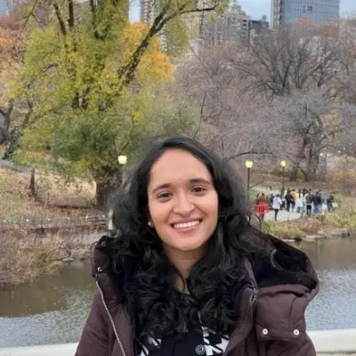

|
Radhika Dua
(राधिका दुआ / 라디카 두아)
Hello, I'm a Ph.D. student at the Center for Data Science, New York University, where I am very fortunate to be advised by Prof. Eric Oermann and Prof. Kyunghyun Cho. My research focuses on reliable and clinically grounded medical AI, spanning three threads: interpretable evaluation of medical generative models, uncertainty quantification for safe decision-making, and cross-modal learning to extend access to advanced imaging.
Before NYU, I was a Predoctoral Researcher at Google DeepMind / Google Research, where I had the opportunity to work with Dr. Gaurav Aggarwal, Alok Talekar, Ishan Deshpande, and Dr. Sujoy Paul on Agricultural Landscape Understanding and related segmentation problems, including a country-scale system now serving 11 countries across the Global South (agri.withgoogle.com). I earned my M.S. from the KAIST Graduate School of AI under Prof. Edward Choi, where I worked on making models robust to distribution shifts. Earlier, I was a summer intern at Brown University with Prof. Srinath Sridhar, and a visiting researcher at IIT Hyderabad with Prof. Vineeth N. Balasubramanian.
Email /
CV /
Google Scholar /
LinkedIn /
Github /
Twitter
|

|
|
* denotes equal contribution. See Google Scholar for the entire list.
|
Clinically Grounded Agent-based Report Evaluation: An Interpretable Metric for Radiology Report Generation
Radhika Dua, Young Joon (Fred) Kwon, Siddhant Dogra, Daniel Freedman, Diana Ruan, Motaz Nashawaty, Danielle Rigau, Daniel Alexander Alber, Kang Zhang, Kyunghyun Cho, Eric Karl Oermann
Under review, Nature Communications
NeurIPS 2025 GenAI4Health Workshop
NeurIPS 2025 WiML Workshop
paper
/
bibtex
|
Generalist Foundation Models Are Not Clinical Enough for Hospital Operations
Lavender Y. Jiang, Angelica Chen, Xu Han, Xujin Chris Liu, Radhika Dua, Kevin Eaton, Frederick Wolff, Robert Steele, Jeff Zhang, Anton Alyakin, Qingkai Pan, Yanbing Chen, Karl L. Sangwon, Daniel A. Alber, Jaden Stryker, Jin Vivian Lee, Yindalon Aphinyanaphongs, Kyunghyun Cho, Eric Karl Oermann
Under review, Nature Medicine
paper
/
bibtex
|
Agricultural Landscape Understanding At Country-Scale
Radhika Dua, Nikita Saxena, Aditi Agarwal, Alex Wilson, Gaurav Singh, Hoang Tran, Ishan Deshpande, Amandeep Kaur, Gaurav Aggarwal, et al., Alok Talekar
Under review, KDD 2026
NeurIPS 2025 Workshop on Tackling Climate Change with Machine Learning (Climate Change AI)
paper
/
bibtex
|
TAPUDD: Task Agnostic and Post-hoc Unseen Distribution Detection
Radhika Dua, Seongjun Yang, Yixuan Li, Edward Choi
WACV, 2023
ECCV 2022 workshop (short paper)
paper
/
bibtex
|
Towards a Practical Utility of Federated Learning in the Medical Domain
Seongjun Yang, Hyeonji Hwang, Daeyoung Kim, Radhika Dua, Jongyeup Kim, Eunho Yang, Edward Choi
CHIL, 2023
paper
/
bibtex
|
ConDor: Self-Supervised Canonicalization of 3D Pose for Partial Shapes
Rahul Sajnani, Adrien Poulenard, Jivitesh Jain, Radhika Dua, Leonidas J. Guibas, Srinath Sridhar
CVPR, 2022
paper
/
project
/
video
/
code
/
bibtex
|
Reweighting Strategy based on Synthetic Data Identification for Sentence Similarity Comparison
Taehee Kim, ChaeHun Park, Jimin Hong, Radhika Dua, Edward Choi, Jaegul Choo
COLING, 2022
paper
/
bibtex
|
Automatic Detection of Noisy Electrocardiogram Signals
Radhika Dua, Jiyoung Lee, Joon-myoung Kwon, Edward Choi
International Workshop on Pattern Recognition in Healthcare Analytics, ICPR 2022
paper
/
bibtex
|
Natural Attribute-based Shift Detection
Jeonghoon Park*, Jimin Hong*, Radhika Dua*, Daehoon Gwak, Yixuan Li, Jaegul Choo, Edward Choi
Under review
paper
/
bibtex
|
Beyond VQA: Generating Multi-word Answers and Rationales to Visual Questions
Radhika Dua*, Sai Srinivas Kancheti*, Vineeth N. Balasubramanian
MULA Workshop, CVPR 2021
paper
/
slides
/
video
/
poster
/
bibtex
|
VayuAnukulani: Adaptive Memory Networks for Air Pollution Forecasting
Radhika Dua*, Divyam Madaan*, Prerana Mukherjee, Brejesh Lall
IEEE GlobalSIP, 2019
paper
/
code
/
bibtex
|
|
Teaching
|
|
New York University
- Fundamentals of Machine Learning (CSCI-UA 473, Courant Institute), Section Leader & Grader, Fall 2026, Prof. Kyunghyun Cho
- Responsible Data Science (DS-UA 202, Center for Data Science), Teaching Assistant, Spring 2025, Prof. Umang Bhatt
KAIST
- CC500: Scientific Writing, Teaching Assistant, Prof. Mik Fanguy
- HSS583: Graduate English Presentations, Teaching Assistant, Prof. Mik Fanguy
NPTEL (with IIT Hyderabad)
Indian Institute of Technology Hyderabad
|
|
Awards and Fellowships
|
- NYU Data Science Graduate Fellowship, 2024–2029
- NYU Center for Data Science Medical Fellowship, 2024–Present
- Travel Award, NeurIPS (Women in Machine Learning), 2025
- KAIST International Students Scholarship, 2020–2022
- Grace Hopper Celebration India (GHCI) Student Scholarship, 2018
- Celestini Project India (Marconi Society and Google), second prize, 2018
- Economic Times Campus Stars (India's brightest engineering students), 2018–2019
|
Last updated May 3, 2026.
Design and source code from Jon Barron's website.
|
{kind=link}